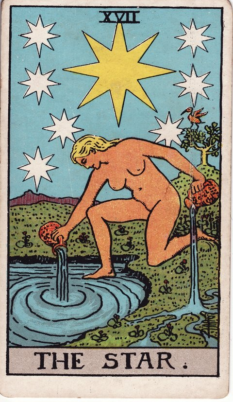

메이저 아르카나 · 타로 카드 백과사전
별 (The Star)

정방향
키워드: 잔잔한 희망 · 치유의 빛 · 회복되는 자신감 · 차오르는 영감 · 은은한 위로 · 다시 트이는 숨통
조언: 확신이 서지 않아도 마음속 작은 빛을 따라가 보세요.
연애운
솔로
희망적인 만남이나 순수한 설렘이 다시 찾아오는 시기입니다. 지쳤던 마음이 회복되며 자연스럽게 좋은 인연을 끌어당깁니다.
커플
상처를 딛고 관계가 서서히 회복되며 신뢰가 다시 쌓이는 시기입니다. 작은 신뢰들이 다시 쌓이며 관계가 서서히 회복됩니다.
재물운
소비
힘든 시기를 지나 재정적으로 숨통이 트이는 흐름이 시작됩니다. 여유가 생긴 만큼 스스로에게 작은 보상을 해줘도 좋습니다.
투자
장기적인 안목으로 준비한 투자가 서서히 희망을 보여주는 시기입니다. 장기적인 안목을 믿고 조금 더 지켜봐도 괜찮습니다.
취업운
구직
지쳐 있던 마음에 다시 희망이 보이며 좋은 소식이 찾아오는 시기입니다. 지쳤던 마음을 회복하며 다시 도전할 힘을 얻을 수 있습니다.
이직
노력의 결실이 서서히 드러나며 희망이 보이는 시기입니다. 노력의 결실이 서서히 보이기 시작하니 조금만 더 힘내보세요.
직장운
팀워크
팀 내 지친 분위기가 서서히 풀리며 다시 힘을 낼 여지가 생기는 시기입니다. 지쳤던 팀 분위기가 서서히 회복되고 있으니 힘을 모아보세요.
개인성과
묵묵히 쌓아온 업무 성과가 주변에 조금씩 드러나기 시작하는 시기입니다. 굳이 드러내려 애쓰지 않아도 꾸준함이 스스로 증명될 수 있습니다.
사업운
창업준비
힘든 준비 과정 끝에 사업에 대한 희망이 다시 보이는 시기입니다. 힘들었던 준비 과정이 곧 좋은 결실로 이어질 수 있습니다.
운영중
지쳤던 시간을 딛고 사업에도 다시 온기가 도는 회복의 조짐이 보이는 시기입니다. 회복의 흐름을 믿고 꾸준히 나아가보세요.
학업운
시험준비
그동안의 노력이 서서히 좋은 결과로 이어지는 희망적인 시기입니다. 그동안의 노력을 믿고 자신 있게 마무리해보세요.
진로고민
막막했던 진로에 대해 다시 희망을 갖게 되는 시기입니다. 막막했던 고민이 서서히 풀리며 방향이 보이기 시작합니다.
건강운
신체
몸이 서서히 회복되며 활력을 되찾는 치유의 시기입니다. 몸이 회복되는 신호를 믿고 무리하지 않게 이어가세요.
정신
지친 마음이 서서히 치유되며 희망을 되찾는 시기입니다. 지친 마음이 서서히 치유되고 있다는 것을 느껴보세요.
대인관계운
새로운 인연
지쳐 있던 마음이 풀리며 새로운 사람들과도 편안하게 어울릴 여유가 생기는 시기입니다. 억지로 다가가지 않아도 편안해진 태도가 좋은 인연을 자연스럽게 불러옵니다.
기존 관계
서먹해졌던 주변 사람들과의 관계가 조금씩 다시 편안해지는 시기입니다. 먼저 안부를 묻는 작은 손짓이 멀어졌던 사이를 자연스럽게 이어줍니다.
명예운
서서히 좋은 평판과 신뢰를 회복해가는 시기입니다. 잃었던 신뢰가 조금씩 회복되고 있으니 꾸준히 이어가세요.
이사운
희망하던 곳으로의 이동이 서서히 현실이 되는 시기입니다. 희망하던 방향으로 조금씩 가까워지고 있으니 포기하지 마세요.
자식운
아이와의 관계에 희망적인 변화가 찾아오는 시기입니다. 작은 변화들이 쌓이며 관계가 희망적으로 나아갑니다.
역방향
키워드: 꺼져가는 희망 · 지친 확신 · 더딘 회복 · 가라앉은 자신감 · 멀게 느껴지는 빛 · 지쳐버린 마음
조언: 지금은 어둡게 느껴져도 빛이 완전히 꺼진 것은 아니라는 걸 기억하세요.
연애운
솔로
좋은 인연에 대한 기대와 확신을 잃어가고 있을 수 있는 시기입니다. 확신이 흔들려도 희망을 완전히 놓지는 마세요.
커플
관계 회복이 더디게 느껴지며 지치는 마음이 들 수 있습니다. 더디더라도 조금씩 회복되고 있다는 것을 믿어보세요.
재물운
소비
재정적 자신감을 잃고 불안해하며 소비를 망설일 수 있습니다. 불안하더라도 조급하게 움직이지 말고 흐름을 지켜보세요.
투자
회복이 더디게 느껴지며 투자에 대한 확신을 잃어갈 수 있는 시기입니다. 회복이 더디더라도 방향이 틀리지 않았다면 믿고 기다려보세요.
취업운
구직
계속된 실패로 자신감을 잃고 지쳐가고 있을 수 있는 시기입니다. 지친 마음을 다독이며 잠시 쉬어가는 것도 필요합니다.
이직
성과가 보이지 않아 지치고 회의감이 들 수 있는 시기입니다. 회의감이 들더라도 지금까지의 노력을 믿어보세요.
직장운
팀워크
팀 전체의 성과가 더디게 나타나며 동료들 사이에 지친 기색이 돌 수 있는 시기입니다. 혼자 애쓰기보다 팀원들과 고충을 나누며 분위기를 다잡아보세요.
개인성과
노력한 만큼 인정받지 못해 자신감을 잃을 수 있는 시기입니다. 인정받지 못했더라도 스스로의 노력을 먼저 인정해주세요.
사업운
창업준비
확신이 흔들리며 사업 시작을 망설이게 되는 시기입니다. 확신이 흔들리더라도 조급하게 포기하지 마세요.
운영중
사업에 대한 자신감을 잃고 불안해하고 있을 수 있는 시기입니다. 불안한 마음을 다독이며 흐름이 돌아오기를 기다려보세요.
학업운
시험준비
노력한 만큼 결과가 안 나와 자신감을 잃을 수 있는 시기입니다. 결과에 흔들리지 말고 다음 기회를 준비해보세요.
진로고민
진로에 대한 확신을 잃고 지쳐가고 있을 수 있는 시기입니다. 지쳤더라도 희망을 완전히 놓지 않는 것이 중요합니다.
건강운
신체
회복이 더디게 느껴져 지치는 마음이 들 수 있는 시기입니다. 더디더라도 꾸준한 관리가 결국 회복으로 이어집니다.
정신
자신감을 잃고 마음이 계속 가라앉아 있을 수 있는 시기입니다. 가라앉은 마음을 다독이며 작은 희망을 찾아보세요.
대인관계운
새로운 인연
새로운 사람들과 어울릴 마음의 여유가 사라지며 스스로 문을 닫아둘 수 있는 시기입니다. 닫아둔 마음의 문을 조금씩 다시 열어보세요.
기존 관계
친구나 지인과의 오래된 관계가 회복되기까지 시간이 더 필요할 수 있는 시기입니다. 서두르지 말고 예전처럼 자연스럽게 연락을 이어가 보세요.
명예운
평판 회복이 더디게 느껴져 지칠 수 있는 시기입니다. 더디더라도 성실한 태도를 유지하면 결국 회복됩니다.
이사운
원하는 이동이 늦어지며 지칠 수 있는 시기입니다. 늦어지더라도 원하는 방향이 틀리지 않았다면 기다려보세요.
자식운
아이 문제로 지친 마음이 회복되기까지 시간이 더 필요할 수 있습니다. 지친 마음이 회복될 때까지 조급해하지 않아도 괜찮습니다.
같은 슈트: 바보 · 마법사 · 여사제 · 여황제 · 황제 · 교황 · 연인 · 전차 · 힘 · 은둔자 · 운명의 수레바퀴 · 정의 · 매달린 사람 · 죽음 · 절제 · 악마 · 탑 · 별 · 달 · 태양 · 심판 · 세계
홈에서 직접 카드 뽑아보기 ↗